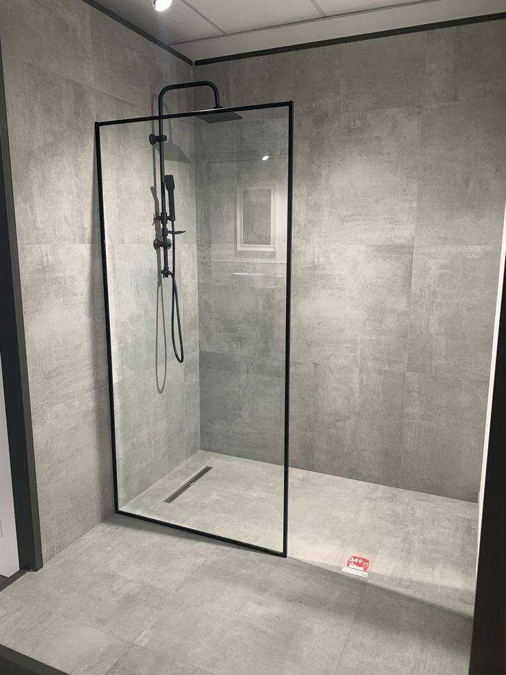
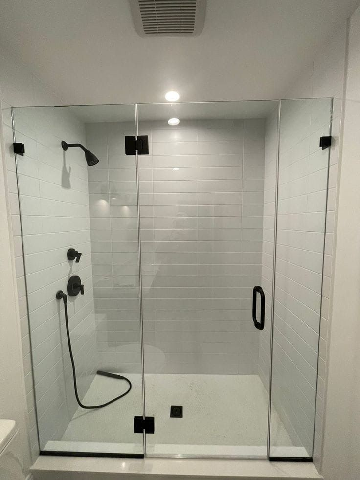
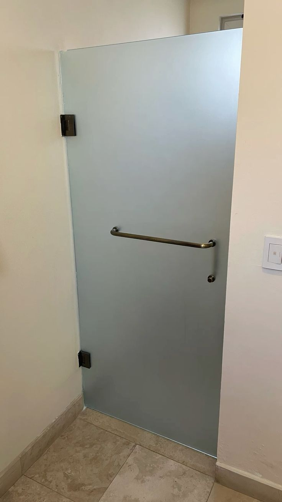
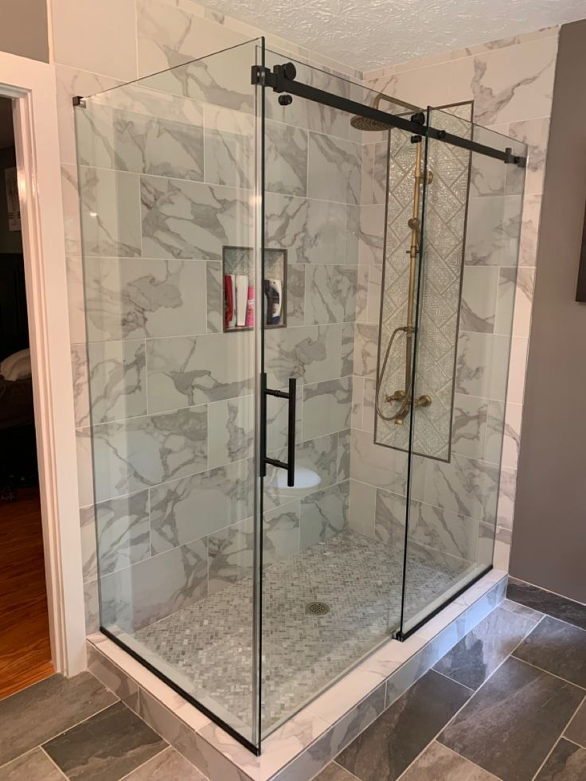

Parois de douche à Rabat
Parois fixes, à l'italienne, portes battantes ou coulissantes en verre trempé, profilés noir mat, chromé ou inox.
- Verre trempé 10 mm
- Fixe, battante, coulissante ou d'angle
- Traitement anticalcaire en option
Parois de douche & garde-corps · Rabat
ELA Glass intervient dans toute la ville de Rabat — Agdal, Hay Riad, Souissi, Hassan et L'Océan — pour concevoir, fabriquer et poser parois de douche et garde-corps en verre trempé sur mesure. Relevé à domicile gratuit, finitions soignées.
Nos services à Rabat
Chaque pièce est mesurée chez vous, fabriquée puis posée sur mesure — au millimètre près.

Parois fixes, à l'italienne, portes battantes ou coulissantes en verre trempé, profilés noir mat, chromé ou inox.

Garde-corps d'escalier, de balcon ou de terrasse en verre trempé, fixations inox 304 — la sécurité sans masquer la vue.
Rabat
Rabat pose un problème que les constructions récentes ne posent pas : l'ancien. Dans les appartements d'Agdal, de Hassan ou de l'Océan, les salles de bain ont été refaites plusieurs fois, les murs sont rarement d'équerre et les receveurs pas toujours de niveau. Une paroi standard achetée en grande surface ne s'y adapte pas — elle laisse un jour d'un côté et force de l'autre. C'est précisément ce que le sur-mesure résout : on mesure les défauts avant de mesurer les dimensions, et le verre est découpé à la cote réelle. L'accès compte aussi. Cages d'escalier étroites, ascenseurs anciens ou absents : le format des panneaux se décide au relevé, pas en atelier.
FAQ locale — Rabat
Nos autres prestations
Tarifs
Prix indicatifs de départ, hors options. L'estimation exacte est donnée après la prise de mesure gratuite à domicile.
Prix à l'ensemble, fixé après mesure sur place
Prix au mètre linéaire, fixé après mesure sur place
Rabat
À Rabat, la demande va du grand walk-in en verre clair dans les villas de Souissi aux parois compactes des appartements d'Agdal et Hay Riad. Nous réalisons aussi des garde-corps en verre pour escaliers et mezzanines. Chaque projet est relevé au millimètre sur place avant la moindre découpe.
Réalisations
Parois et portes fabriquées et posées par notre équipe.




Questions fréquentes
Contact
Décrivez votre projet : on revient vers vous rapidement pour organiser une prise de mesure gratuite à Rabat.
Envoyez vos dimensions et une photo de l'emplacement. On vous répond avec une estimation, puis on organise la mesure gratuite.
Écrire sur WhatsAppVous préférez l'e-mail ? Écrivez-nous.
Prise de mesure à domicile gratuite et sans engagement.